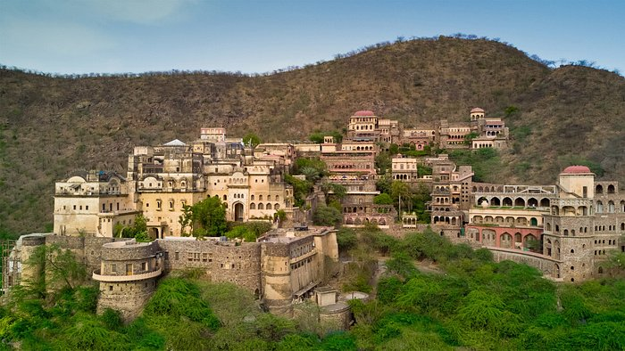

About Neemrana Fort
Neemrana Fort Palace is a historical and architectural gem located in the Neemrana town of Rajasthan, India.
Neemrana Fort Palace is believed to have been built in 1464 AD by Raja Rajdeo, a descendant of Prithvi Raj Chauhan III. It was the third capital of the descendants of Prithvi Raj Chauhan III. The fort has a rich history and has witnessed various rulers and dynasties, including the Mughals and Jats. In 1986, it was converted into a heritage hotel, becoming one of the oldest heritage resorts in India.